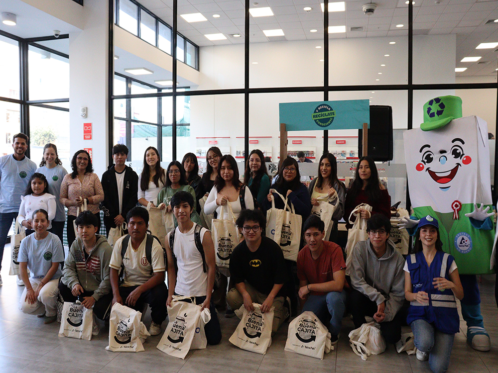
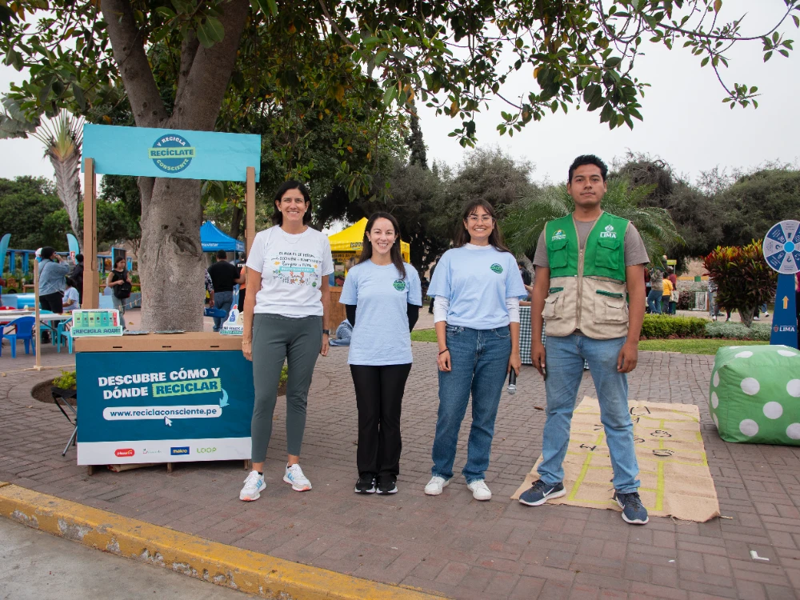

REDUCIR, REUTILIZAR Y RECICLAR
RECICLA CONSCIENTE
Somos un movimiento nacional en Perú, liderado por Supermercados Peruanos, que busca promover una cultura de reciclaje a través de la unión de empresas, municipalidades, recicladores y ciudadanos. Funciona mediante cuatro ejes principales: la creación de estaciones de reciclaje en supermercados, la promoción de la ciudadanía ambiental, la alianza con recicladores formalizados y la investigación sobre hábitos de reciclaje. Líder del movimiento: La campaña es impulsada por Supermercados Peruanos, con la colaboración de diversas empresas aliadas.

